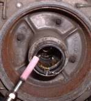
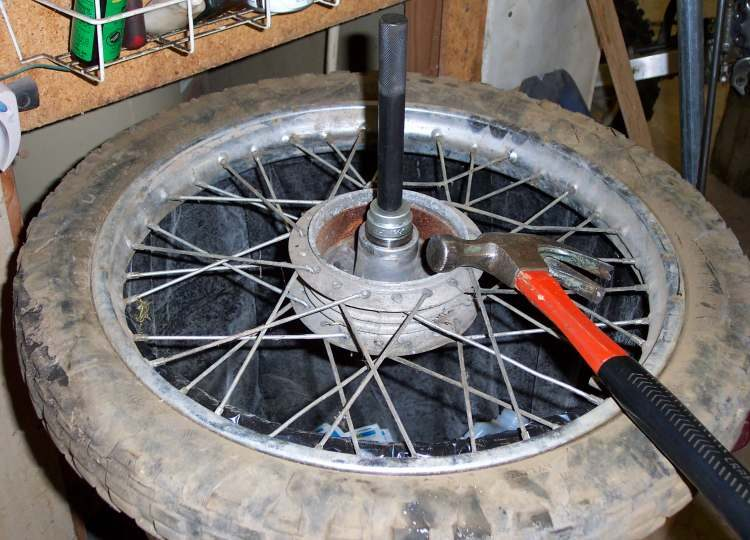

A badly worn bearing can lose its inner ring and balls. Only the outer ring stays in the hub, and a drift has nothing to push on. This page covers that case, and the care needed with cast wheels. For ordinary bearing replacement see Replace a wheel bearing.
Safety
- Wear safety goggles for grinding and hammering. Metal chips fly.
- Support the wheel flat and steady. Never hammer on a wheel hanging in the air.
- A hub can be damaged for good by one wrong blow. If you are not sure, take the wheel to a workshop.
- Do not ride the bike while a wheel bearing is loose or rumbling. A locked wheel at speed can throw the rider.
You need
- New bearings and seals. Check the part numbers on the old ones before buying.
- A drift or punch, a hammer, penetrating oil, a thin screwdriver and a small grinder with a thin stone.
- A hot air gun. Hubs are usually aluminium. Gentle heat expands the hub and loosens the bearing.
Steps
- Take the wheel out and remove the brake disc or drum parts as needed. Lever the seals out on both sides.
- Look at the hub bore from each side. On some cast wheels one side has a smaller hole than the other. The centre spacer can only come out through the large hole, so work from that side.
- Try the ordinary method first. Place the drift on the outer ring of the bearing, never on the hub. Tap in turns at opposite points so the bearing comes out level.
- If the bearing parts fall out and only the outer ring is left, grind a groove across the width of the outer ring at one point, with a thin stone. Stop as soon as the aluminium of the hub just begins to show. Do not cut into the hub.
- The ring now loses its grip. Pry it inwards with a thin screwdriver and lift it out.
- If the ring is rusted in place, soak it with penetrating oil. Grind a second groove at another point and take it out in pieces.
- Bearing pullers that grip the inner ring or use an expanding plug put load through the balls. They are fine for a bearing that will be thrown away, but not for one you plan to refit.
- Clean the bore. Check it for scoring or a worn, loose fit. If the bore is damaged, do not fit a new bearing. Ask a workshop to advise.
- Warm the hub gently with a hot air gun. Fit new bearings from the outside, driving on the outer ring only, with the centre spacer between them. Fit new seals.
Check your work
- The bore is clean, smooth and undamaged.
- Both bearings sit square and the wheel spins smoothly without roughness or play.
- Seals are fitted and the spacer is between the bearings.
If it did not fix the problem
- A hot hub after a ride: Wheel hub or brake drum is very hot after riding.
- Noise remains: Rumbling or grinding from a wheel.
- To press bearings in without a hammer: Make a simple bearing press.
- If the hub bore is damaged or the wheel casting is cracked, replace or repair the wheel at a workshop.